Meera is 22 and reached her Airbnb at 1:45 AM with three friends after an overnight bus. The door code didn’t work, the host was asleep and her phone was at 8%. Afterwards she summed up the night in one line.
“Check-in shouldn’t fall apart when you arrive late with bad network.”
This case study looks at what Airbnb gives a guest in that exact moment. I tried to get help in the app the way Meera would have, worked out where it let her down and then designed what should happen instead.
Overnight busFour friends
8% batteryOne bar of signal
Details in an emailSomewhere
Code failsKeypad blinks red
Host asleepNo answer
Four in the coldNobody to turn to
From the briefGo deep on one focused problem
What does Airbnb do when you’re locked out in the middle of the night?
My first question was what Airbnb actually does for a guest who is locked out at night. It sounded easy to answer because Airbnb has a Help Centre and a support chat and even a policy for this situation.
So I opened the app on one of my own past bookings and tried to get help the way Meera would have, standing at that gate with a dying phone. I followed every route I could find and noted where each one ended.
From the briefLight research
So where does the app actually send you?
I found four ways to look for help, and none of them starts from a part of the app made for check-in.
Check-in details arrive by email or in the chat with the host, so in Meera’s case they were buried in her inbox. When something goes wrong at the door there is no single place to start from.
~26 minspent trying all four
6+support threads for one trip
Route 1
Search the Help Centre
Profile
Get help
Help Centre
Search
General articles
I searched for Meera’s situation in my own words. The 152 articles that came back weren’t filtered to it, and the closest ones were general advice that ended with “contact customer service”. Nothing spoke to the moment of check-in, which is where a guest like Meera gives up on it.
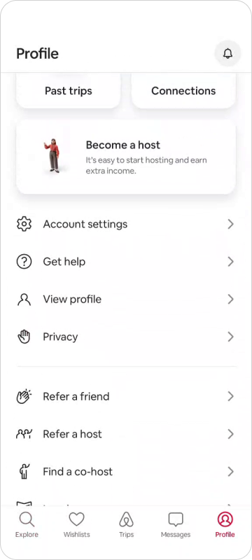
Help sits under Profile
152 loosely matched articles
Nothing about check-in
Route 2
Open the trip
Trips
Your trip
Check-in
Your stay
Help Centre or support
The check-in tile looks like a button but doesn’t open anything. My details had come by text in the chat with the host, and messaging or calling the host only helps if they answer and have shared a number. The full stay page shows a check-in time and no details, since those only appear about 48 hours before arrival, and at the bottom everything leads to the Help Centre or support.
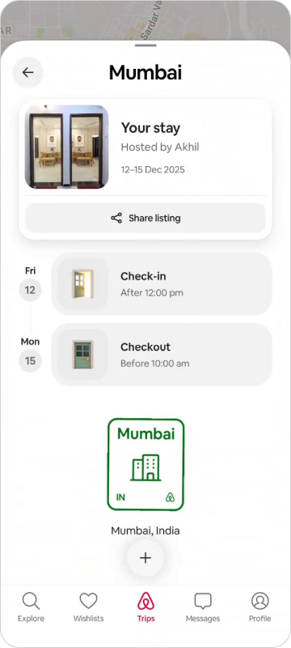
The check-in tile isn’t tappable
Details sent by text in the host chat
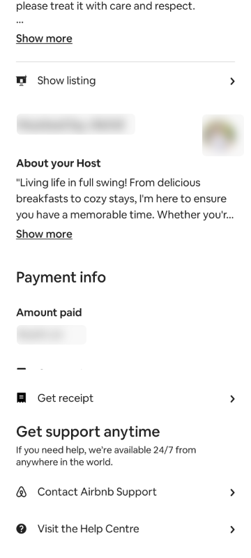
The stay page ends at support
Route 3
Contact support
Your stay
Contact support
AI chat
Back to Trips
Support opens from the stay page with an AI assistant. On a weak signal my message sat on “Sending” and then failed, and the reply that did arrive sent me back to the Trips page to tap “connect with a member of our team”, a button that isn’t there.
The stay page
The message I sent
Sent back to Trips, with no button to tap
Route 4
Try again
Support again
New AI chat
Messages
No button here
Every attempt opens a new thread that forgets the last one. One thread offers to connect her with a team member but there is nothing to tap.
A fresh chat every time
Six threads for one trip
It wasn’t one failure. It was a chain.
Support did exist, but it wasn’t tied to the trip she was standing outside. It was scattered across four places and some of them were dead ends, so when one link broke the next had nothing to lean on.
InformationNo offline copy of the address or the code
ContextNothing in the app changed for 8% and one bar
AccessNo second way in once the keypad failed
HostNo one else to call when the host didn’t answer
AirbnbNo one who owned the case in that moment
From the briefKey states where user trust or clarity could break
Airbnb’s own help page says to contact them if the host hasn’t replied within “a reasonable time”.
How long is that at 1:45 AM?
That question became the premise of the design. Within ten minutes of asking for help, Meera should know that someone is working on it and be left with a way forward that still works after her battery dies.
Reassurance
She can see the team trying on her behalf, and in the happy case the host picks up and gets back to her.
Support
If the host can’t fix it, Airbnb support steps in and gets her group to a backup stay.
Safety
Whatever happens she is offered a safe option and a way to follow up, even once her phone is dead.
I couldn’t change the wait itself. What I could change was the waiting, because a wait feels endless when there is no feedback on what is happening. So I designed a system of fallbacks that shows her every step and finishes well before her battery does.
Her battery
8% and falling
The fallbacks
within ten minutes
From the briefOne focused problem and flow
So what would “fixed” even look like?
I started with the version of this night that goes right.
Meera calls and the host picks up within a minute. They tell her to hold the keypad button for five seconds and say the spare key is in the lockbox if that doesn’t work. Four minutes later the group is inside and the host texts “Sorry! Sleep well.” Nothing about that night is clever. It works because of four simple things.
Someone answered fast
She knew within a minute that she wasn’t alone.
The host knew the place
The fix came from knowing their own keypad.
There was a backup
The spare key meant one failure wasn’t the end.
It ended warmly
“Sleep well” is what she’ll remember.
When the host is silent the app has to give her those same four things on its own.
The aim
Within ten minutes of asking for help, Meera knows someone is on it and has a way forward, whether that is inside, a backup stay or somewhere safe.She keeps a way to follow up even if her phone dies. Ten minutes is how long the fallbacks take to run, not a promise about the lock.
From the briefStakeholder constraints
Who else is part of this night?
Meera isn’t the only stakeholder. Whatever helps her at the gate also wakes someone up or costs someone money. A fix that only works for the guest turns into a free refund button, or a host who stops accepting late arrivals.
Meera and friends
The guests
Cold and tired with one booking shared between four phones.
Needs to know the next step and to get inside or get a bed.
The host
Asleep at night
If every lockout wakes them five times they will stop taking late arrivals.
Needs one clear alert and a fair chance to fix it.
Night support
Airbnb’s team
A small team with a queue at night. Every minute spent asking what happened is a minute Meera doesn’t have.
Needs the whole story the moment they pick it up.
Airbnb
The business
A refund is cheaper than losing a guest for good. A button that hands out refunds to anyone is worse than both.
Needs trust kept and hosts kept without inviting abuse.
From the briefBalance user needs with company goals
So where should the answer sit?
Most products that cover the failure states do it with something only the guest benefits from, like a person on call all night or a free room for anyone who asks. I aimed for the top right, covering the failures in a way that stays fair to the host and to Airbnb.
What the others do better
TuroA 30 minute clock, so a guest knows exactly when to escalate.
VrboSupport contacts the host on the guest’s behalf.
HotelsWhen a room can’t be honoured they book you elsewhere and pay the first night.
UberOne visible safety button that reaches a live agent.
Booking.comTries to find an alternative, but the guest still does the chasing.
Smart locksCertain, but only for hosts who own one. A night concierge is certain too but needs staff at every listing.
Three ideas kept coming up across all of them. There is a clock, there is a record of what was tried, and there is one door to a human.
From the briefMessy real-world behaviour
Let’s make it concrete.
Thursday night in Indiranagar, Bengaluru. The stay is Indiranagar Loft on a quiet and badly lit street, and the door code is 4821.
The host is asleep and a co-host is listed as a backup contact. In the app they only ever appear as “your host” and “your co-host”. On the other side Ananya is working the night shift in support.
Can we reassure Meera within a minute that someone is already working on it?
Can that still work at 8% with one bar of signal?
If the host can’t be reached, can we stop her wasting effort and go straight to what still helps?
Can she have a real option for the night by minute ten?
And what about the three people standing next to her?
I wrote these as questions the night itself would ask, not as a list of features. Each one comes from a link in the chain where Meera was left on her own.
Each one also had to hold up for the host and for Airbnb. From here on every idea needed to answer at least one of them, or it didn’t belong in the night.
From the briefPractical and feasible, no magic AI or hardware
And what can’t I count on when I’m at that door?
Before drawing a single screen I listed what the night takes away. These became the hard edges of every idea.
A signal
Data drops in and out. A text message usually gets through when an app request doesn’t.
A charged phone
At 8% one long call or a heavy page can end it, so every screen has to be light.
The lock itself
It is whatever the host installed, so the answer can’t depend on a smart lock.
The host
They are probably asleep with the phone on silent, and that is normal at that hour.
A person on demand
Night support exists but it has a queue, so I can’t promise a time.
Magic
No AI that guesses what she needs and no hardware Airbnb doesn’t already own.
From the briefState assumptions and trade-offs
Going ahead with a few assumptions
The trip and its check-in details are saved on the phone once Meera has opened them before she travels.
AirCover covers a night like this. I left the amount off the screen on purpose because nobody should be weighing prices at the gate.
Airbnb can move the booking to a nearby stay using the details it already has, with no new checkout for Meera.
An alert can only ring through the host’s Do Not Disturb if they have allowed it. The alert is still designed for a phone that is simply on silent.
From the briefPractical and feasible
Picking up the pen
Ideation started from the five questions. I wrote fifty ideas against them and then weighed each one against the limits above, the goals of the brief and the ten-minute aim.
They ranged from things Airbnb could ship next sprint to things that would be ideal but hard.
Made it into the flowLeft outHover or tap any idea to see why
Reassured within a minute
Made it inTelling her when the next update comes turns an open wait into a short one. It is the first thing Meera sees after she asks for help.
Made it inSeeing “Ringing your host” as it happens shows the work being done. The same log later protects the host and helps support.
Left outA named person at a fixed time is a promise night support can’t always keep. The flow gives an honest estimate instead.
Left outThis would need a large night team at all times. It is the ideal, but not something Airbnb could ship.
At 8% and one bar
Made it in“Waiting for signal” and then “Sent” stops her from tapping send again and again on a dying phone.
Made it inAfter two minutes without signal the alert goes out as a text from her phone on its own. There is no setting to turn on first.
Left outUseful, but it is a whole new phone system to run. Support calling her back covers most of the same need.
Left outIt helps her find the code but does nothing once the lock fails, which is the real problem here.
Reaching the host gently
Made it inThe host gets one alert that rings through only if they allowed it, instead of a stream of messages and calls.
Made it inThe first glance offers one action, “Message Meera”. A call and a quick “On my way” sit one step deeper.
Left outIt might work once, but hosts who get woken repeatedly stop hosting late arrivals.
Left outMost hosts don’t own one. The answer has to work with any lock.
An option by minute ten
Made it in“Step 2 of 4 · Reaching your host” says how far along the night is without putting a time on anything that hasn’t happened.
Made it inOnly places that are open now and fit the group are shown, with the booking details already moved over.
Left out after reviewA countdown to the options was in round three. A time on screen is a promise the host or the queue can break, so it went in round four.
Left outA free night for anyone who taps a button would be abused. Options only appear inside the support chat, after the attempts are logged.
Left outPartnerships in every city are a long-term business deal. It stays on the list as a later ideal.
The three beside her
Made it inSaying no moves the case to the front of the queue and shows safe places nearby.
Made it inIf Meera’s phone dies, Aisha can carry on from a link that opens in any browser without the app.
Left outIt only works in a few big cities and needs a fleet of people at night. That is the kind of operation the brief rules out.
Left outGuessing her state from sensors is magic. Asking her one clear question is honest and works better.
From the briefEdge cases and failure states
So how do fifty ideas become one night?
The ideas that made it became a ladder of fallbacks. Each step gives Meera something she can see, and if it doesn’t work the next one takes over without her having to start again.
Fallback 1 · reassure
We’ve got it
One tap opens a case and she sees right away that it is being handled. If there is no signal the request waits and sends itself.
Then the host’s own fixes
Fallback 2 · fix it on the spot
The host’s own fixes
Two steps from the host’s guide, the same local knowledge they would give on the phone, before anyone is woken up.
If she’s still locked out
Fallback 3 · reach the host
One alert, then the co-host
Airbnb rings the host once with an alert they allowed, and tries the co-host if nobody answers. Replies land on the screen she is watching.
If neither picks up
Fallback 4 · Airbnb takes over
Support with the whole story
Support joins with every attempt already logged, and options for the night appear in that chat with the booking moved over.
Inside, or a bed for four
Running alongside every step
No signal
The alert goes out as a text from her phone on its own.
Not feeling safe
Emergency services first, then Airbnb’s safety line and places open nearby.
Phone about to die
One friend follows the case on a web link and carries on from there.
From the briefEnd-to-end core flow
Now, back to the door.
Trip today
The code is already on her phone.
The trip opens on the door code, saved earlier so nothing needs a signal, and only Meera can see it. Her friends sit on the trip as a stack of faces. When the code fails, help is one obvious tap away.
What’s going on?
One tap and no typing.
She picks “The code isn’t working” and reads that her host only hears from Airbnb if the quick fixes don’t work.
A case opens and the ten minute clock starts behind the scenes. If there is no signal the request waits and sends itself.
Try this first
The host’s own fixes, before waking them.
Two steps from the host’s guide give her the same local knowledge they would on the phone. “Alert now” is there if she can’t wait, so she stays in control.
We’re on it
She can see every attempt and how far along it is.
A bar fills one stage at a time, from the quick fixes to the host, the co-host and Airbnb support. Nothing that hasn’t happened yet has a time on it, so nothing on the screen can turn out to be wrong.
Airbnb rings the host’s phone with an alert they chose to allow, so Meera doesn’t have to call. Chats with the host and with support wait as two bubbles at the top.
The host’s lock screen
One glance, one action.
The alert is small and offers a single thing, “Message Meera”. The door code never appears on the lock screen.
Opened
Message first, then a call.
Opening the alert shows three replies in order of effort. Messaging Meera comes first, then a call, then “On my way” in one tap.
Your host replied
The reply shows up where she is already looking.
The step turns green, the host’s chat bubble gets a badge and a preview of the reply appears on the hub, so she doesn’t have to go looking in her inbox.
The chat
A code that disappears.
The lockbox code arrives as a card inside the chat with the host, set to disappear later that night. Quick replies let her answer “I’m in” or “Still locked” without typing.
You’re in
Get some rest.
The last screen doesn’t remind her of the lockout. People remember the end of a night more than its middle, so it points forward to the house manual and the Wi-Fi details and closes with one button.
The happy path, one screen per step.
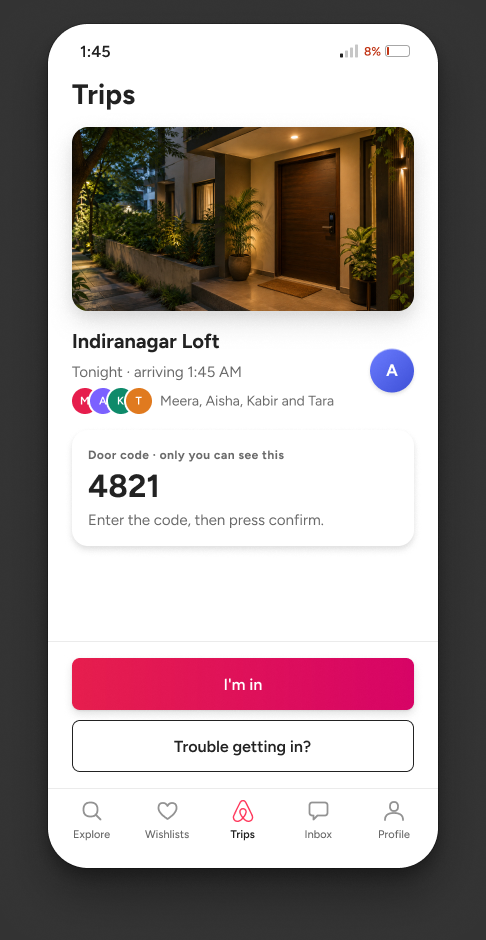
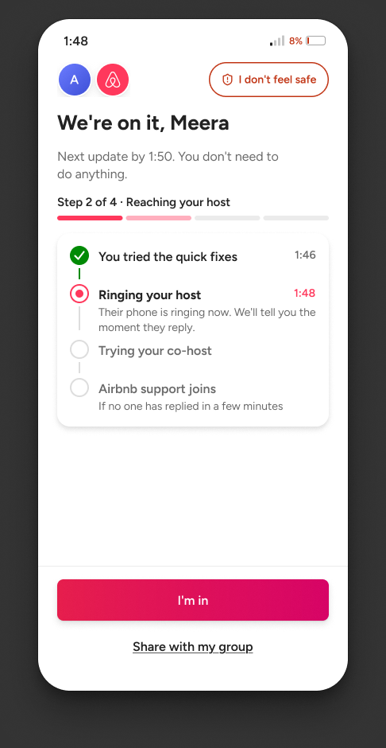
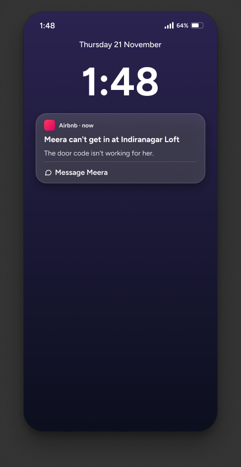
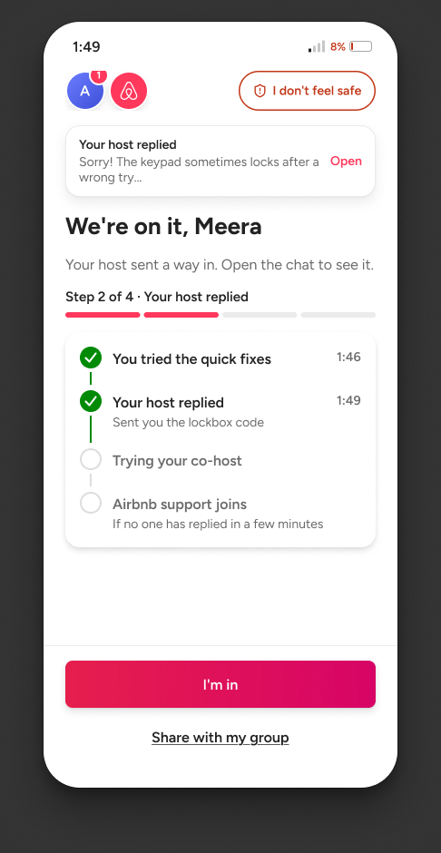
From the briefEdge cases and failure states
But what if the host never wakes up?
Then Airbnb carries the rest of the night.
When nobody picks up, the hub shows that the host and co-host didn’t pick up and that Ananya from Airbnb support has the case, with every attempt already in front of her. Her chat opens as a real conversation, and options for the night only appear in there once the attempts are logged.
A stay for four close by is booked with the details moved over, so there is no new checkout. The new stay is covered by Airbnb, and a button to message support stays on the booked screen.
Support has it
A real chat
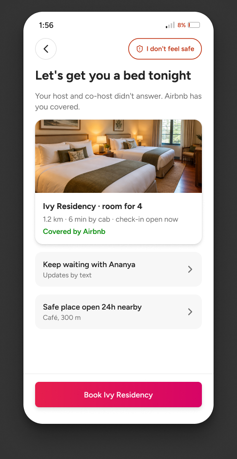
Covered by Airbnb
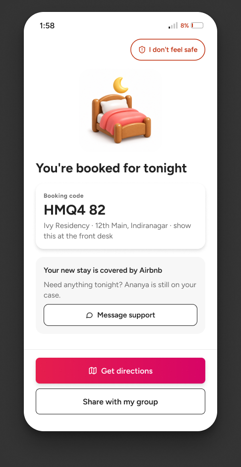
Booked nearby
And if her phone dies first?
Losing the signal doesn’t stop anything. The screen shows a low-signal icon, a bar and a timer so she knows how long it has been waiting, and if calls still work she can ring Airbnb support straight away.
After two minutes the alert goes out as a text from her phone on its own, and the updates sit right under the network card. She is offered the nearest safe place or a link for her group, and if nobody is following along a few minutes later Airbnb calls her to check in.
The link goes to one friend she picks, with their number shown and a “Not right?” link to fix it. A small note says that when she is offline the text goes from her phone at her usual SMS rate.
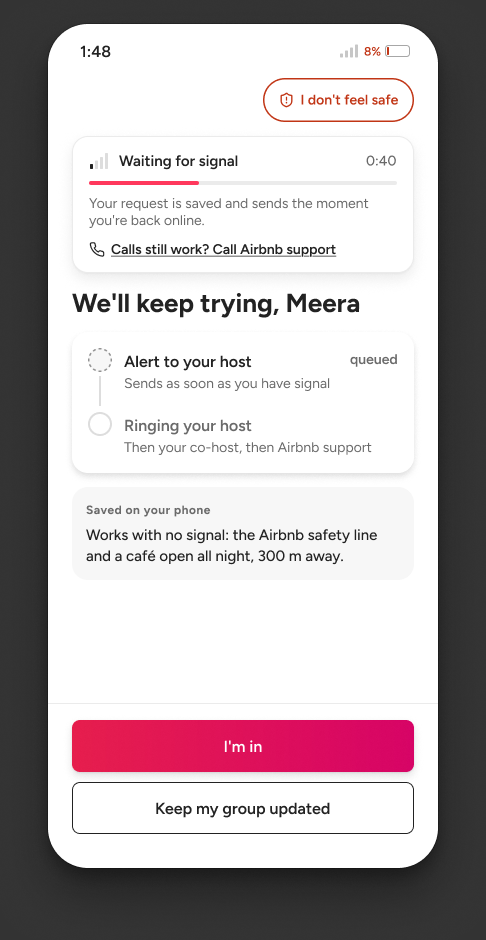
Waiting for signal
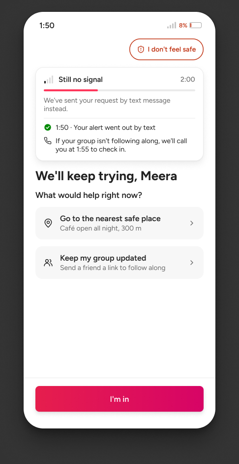
Two minutes later
One friend follows along
And if she just doesn’t feel safe?
“I don’t feel safe” sits at the top of every help screen. One tap offers a call to 112 first, because a real emergency shouldn’t wait for Airbnb. After that comes Airbnb’s 24-hour safety line, which already exists as its Urgent Support Line, and a list of places nearby that are open right now.
Emergency first, then Airbnb
And what if everything fails?
No signal, no battery and no answer from the queue yet. Even then Meera isn’t starting from nothing, because two things don’t depend on her phone being alive.
Saved on the phone
The safety line, the booking and the nearest place open all night work with zero signal.
Kept by Airbnb
The case keeps running on Airbnb’s side, so whoever reaches out next picks up where it stopped from any phone.
From the briefFraud and abuse prevention
Who pays for this, and what stops someone abusing it?
These are the design decisions that keep the flow generous to Meera without turning “can’t get in” into a free refund button. Each one ties a generous moment to something the system can check.
Options only appear in the support chat, after logged attemptsSomeone who isn’t at the door can’t produce a host alert, a call and a wait, and there is nothing on the hub to tap through to a free night.
Codes expire and every reveal is loggedA screenshot or a lost phone can’t open the door the next day.
The host’s payout is held and not cutLocks fail in ways nobody predicts, so the host is reviewed fairly instead of penalised automatically.
The group link sees one case onlyIt expires, Meera can end it at any time and it never shows payment or personal details.
Text messages only during an active lockoutThat keeps the cost of SMS small and tied to a real case.
From the briefBalance user needs with company goals
Who ends up with what?
Meera and friends
Always know the next step and how far along it is, and end up inside or in a bed without typing once. If Meera’s phone dies a friend carries on from a link.
The host
Rung once at most, only if they allowed it, with a reply they can send from the lock screen. They wake up to a fair record and not a pile of missed calls.
Night support
One case instead of six threads, joined only when the host couldn’t fix it and with the whole story attached.
Airbnb
An early fix that costs less than a refund, a rebooking and a one-star review, with hosts protected and abuse limited.
From the briefPractical and feasible
How much of this is new?
Less than it looks. Most of the flow rearranges things Airbnb already runs so that they show up in the right order at the right moment.
Already exists
AirCover and its check-in rules
Host and co-host contacts on every booking
Messaging and push notifications
Night support and its queue
Trip details shown before arrival
New
A case with a clock and an attempt log
One-tap problem choices
Lock screen replies for the host
Requests that wait for signal and send themselves
A web link for the group
A ringing alert the host opts in to
Chats with the host and support on one screen
From the briefLight research and testing
The process followed
The story above reads in a straight line, but the work moved through these stages and looped back more than once.
1
Current app findingsBroke Meera’s night into the links that failed
2
Current app auditTried every route to help on a real booking
3
Online secondary researchLooked at how six other products handle it
4
IdeationFifty ideas against the five questions
5
Idea scoringJudged against the limits, the brief and the aim
6
DesignFour rounds of screens, checked against the brief


 Turo
Turo Vrbo
Vrbo Uber
Uber Booking.com
Booking.com Kabir
Kabir Tara
Tara The co-host
The co-host


 Left out
Left out A case opens and the ten minute clock starts behind the scenes. If there is no signal the request waits and sends itself.
A case opens and the ten minute clock starts behind the scenes. If there is no signal the request waits and sends itself.


 Text messages only during an active lockout
Text messages only during an active lockout